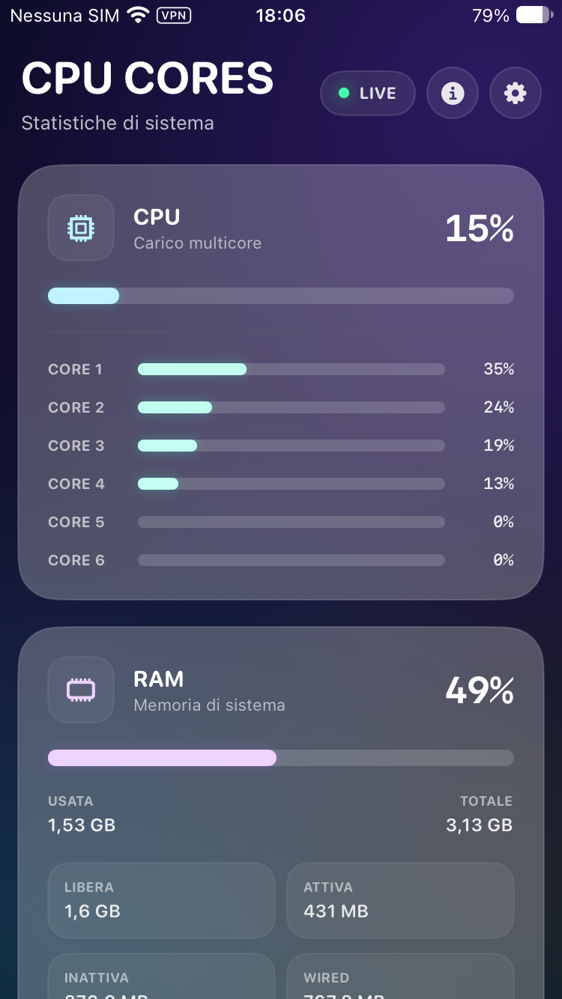

Per-core load up to 8 cores
Real-time total CPU workload and independent logical core load for up to 8 cores.
CPU Cores
The essential system information for your iPhone, in one quiet dashboard.

Capabilities & Insights
Low-level system metrics rendered in real time with lightweight native efficiency.
Real-time total CPU workload and independent logical core load for up to 8 cores.
Accurate breakdown of system RAM across used, free, active, inactive, and wired memory.
Instant disk space diagnostics with clean separation between total, used, and available capacity.
Safe memory pressure signals and APFS purge requests, delegating final resource optimization to iOS.
Deep hardware analytics exposing real battery health, wear percentage, cycle count, maximum capacity, and design capacity on privileged setups.